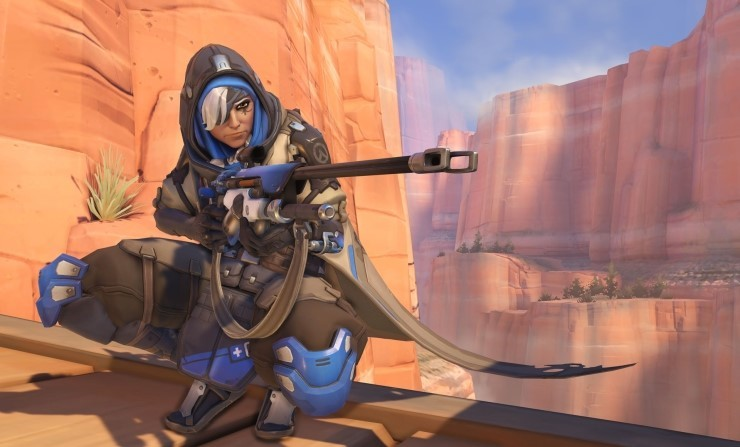

오버워치 아나
오버워치 최고의 원거리 힐러
2020.03.17
《오버워치》는 지금으로부터 60년 후, 즉 '옴닉 사태'가 해결되고 30년이 지난 가상의 미래 지구를 배경으로 한다. 인간은 인공지능을 가진 로봇 '옴닉'을 개발하고, 그들을 전 세계에 자동화된 '옴니움'으로 생산하며, 이들을 이용해 경제적 평등을 이룩했다. 옴닉 사태는 옴니움이 인류를 상대로 살상 로봇을 생산하면서 시작되었다. 국제 연합은 옴닉의 위협에 대항하고 질서를 회복하기 위해 국제 특수기동 부대인 '오버워치'를 결성하였다.